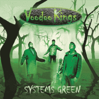

Voodoo Kings - Systems Green (Album, 2012)
01 - Audie Murphy (3:26)
02 - My Babe (3:55)
03 - I'm Not Blind (2:42)
04 - Systems Green (3:56)
05 - The Batman (3:08)
06 - Rock 'N' Roll Heart (4:06)
07 - Voodoo Cars (4:01)
08 - Easy Street (3:37)
09 - There Go My Stars (2:54)
10 - Love Invention (3:29)
11 - Cramped Up (4:04)
12 - Midnight Train (3:46)
© Nervous Records :: [VKCD001]
Notes
United Kingdom.
My experience is based on its Digital release (2014, © 21st Century)
reference information: Discogs®
Review
342/366 (Project 366)
Twist of (neo)Rockabilly Rock'n'Roll with a stretchy UK way of punky rocking and with spices of alternative Folk music, matey tunes and enthusiastic energy. Pleasant tone of sound and courage vibe of intensity. This is especially felt in the first two compositions: "Audie Murphy" and "My Babe". The second song is also about some fruity feel. However, the third composition also successfully continues this rather exclusive style. Somewhat (neo)Rockabilly and old fashioned Rock'n'Roll with touches of softened Punk-Rock and Power Pop. And "I'm Not Blind" has a rather sentimental melody, but the vocals still sound the same rough old way. And it is perky. The fourth song "Systems Green" combines the previous moods and it is possible to highlight the tanginess of the double bass. Everything was on the same wavelength, but already the fifth composition adds special power. "The Batman" with a really psycho beat, hard rockin' and quite experimental itself. Song at a fast pace and striking sense around. With this approach, the title of the next track is not surprising. "Rock 'N' Roll Heart" rolls in cool and powerful. And it looks like a rather peculiar showcase! So, this flow can no longer be stopped. Because "Voodoo Cars" is also about crafted might. Since then, the next five compositions balance on these two sides. Sometimes they surprise with their ability to combine a certain old fashioned rustic look with a rather urban vibe and perform tunes balanced between soft and furious. In principle, before listening, there could be a completely different feeling. But I think that what I heard would not have left me without some vivid memories.